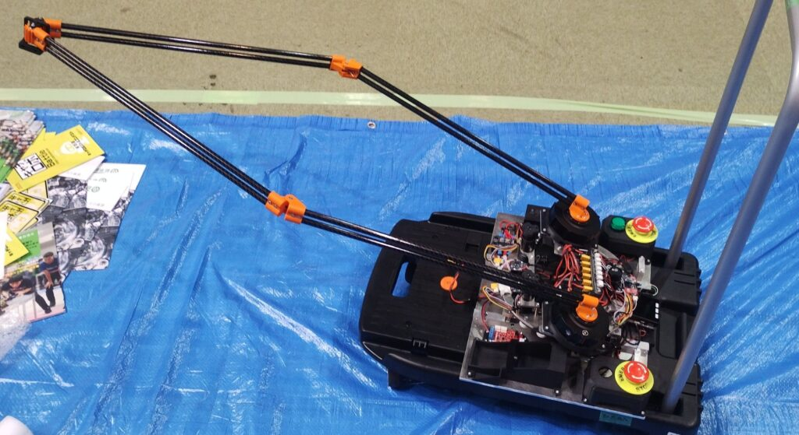
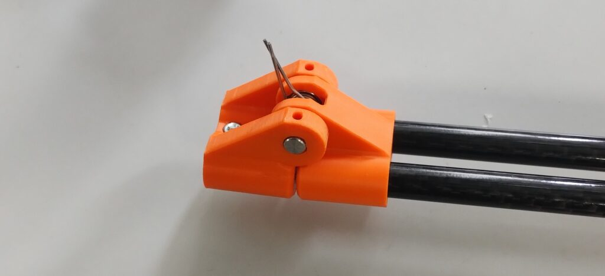
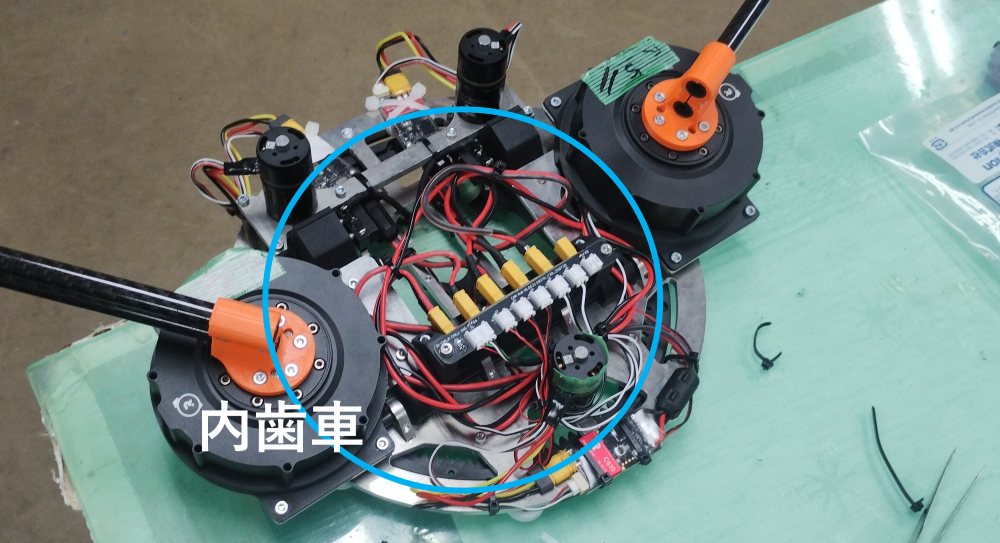
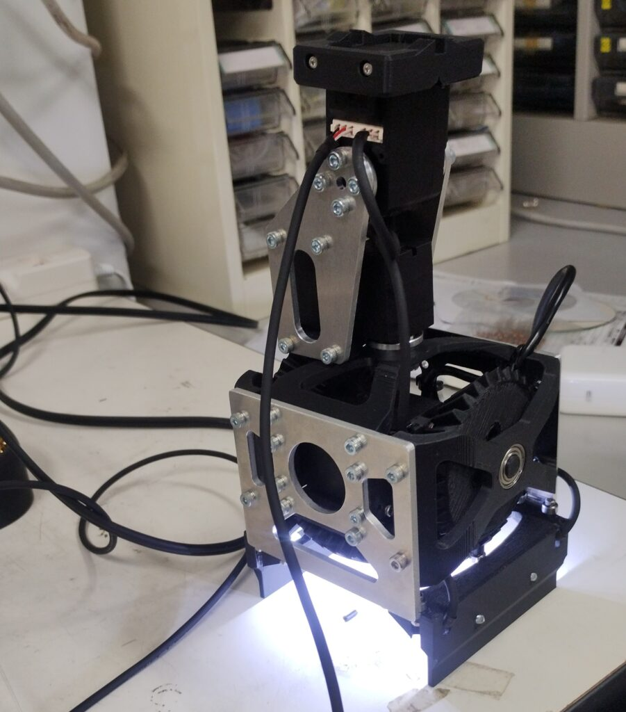
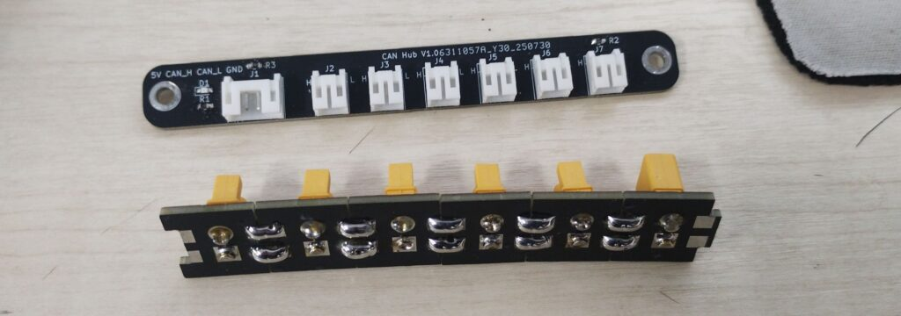

初めてのキャチロボ
「かっこいいロボットを作りたい」という思いから、21-horieとキャチロボに初挑戦しました。私は機械設計・電装・低レイヤー制御を担当し、21-horieがROS 2連携や操作画面、シミュレーションを担当しました。
大きく動いて、畳んで運べる
直径10mm、長さ500mmのカーボンパイプによる5節リンクで、最大約1mのリーチを確保。パイプはASA製の3Dプリント部品で固定し、ばねで関節を外側に押して不安定な位置を避けました。機体を畳むことでスーツケースに収め、会場まで運搬しました。
ハンドと電装の設計
ワーク認識用のUSBカメラをハンドの中央に配置するため、エンドエフェクタの構造を工夫しました。ヨー軸はモーターと内歯車で駆動し、磁気エンコーダーで角度を取得。低レイヤー制御にはM5StackとCANを使い、配線や電源・CANのハブも製作しました。
大会で動かして見えたこと
長いリンクは根元に大きな負荷がかかり、ASA製の関節部品が割れる課題がありました。当日は部品の交換や組み立ての工夫で対応。予選では1点を獲得して予選敗退となりましたが、エキシビションに選ばれ、審査員特別賞を受賞しました。
制作の記録




